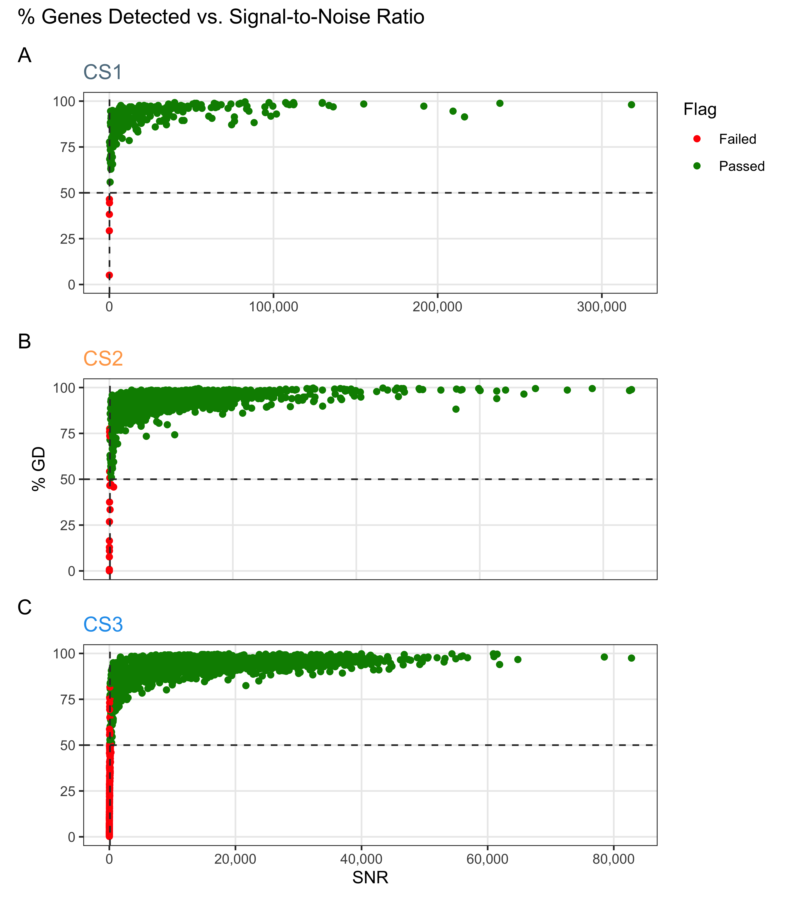
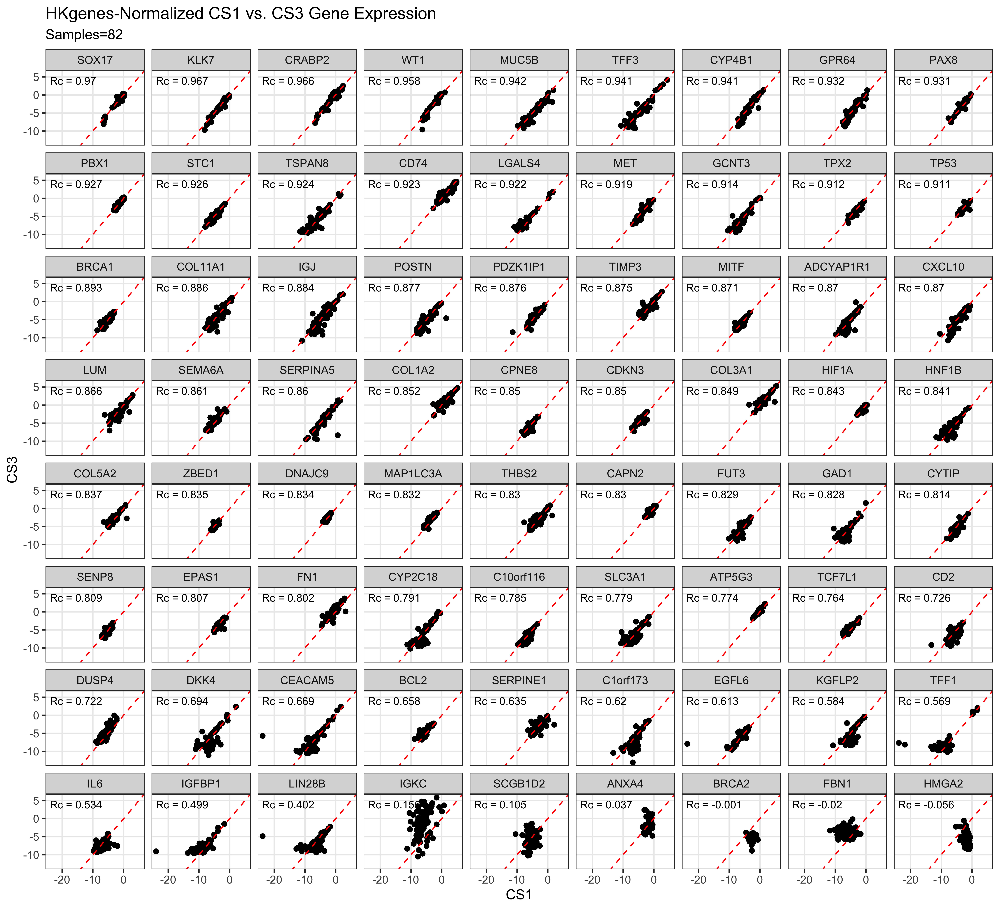
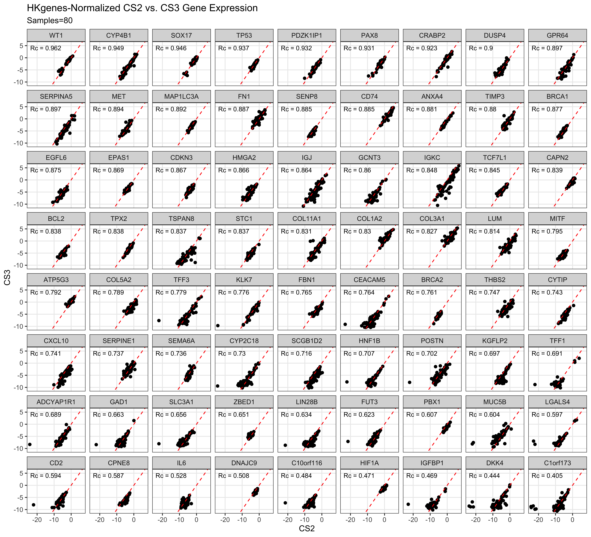

| Variable | Levels | CS1 | CS2 | CS3 | Total |
|---|---|---|---|---|---|
| Selected Cohorts | |||||
| Histotype | HGSC | 128 (44%) | 655 (73%) | 1808 (73%) | 2591 (71%) |
| CCOC | 48 (16%) | 62 (7%) | 164 (7%) | 274 (7%) | |
| ENOC | 60 (20%) | 49 (5%) | 250 (10%) | 359 (10%) | |
| MUC | 17 (6%) | 58 (6%) | 68 (3%) | 143 (4%) | |
| LGSC | 19 (6%) | 20 (2%) | 36 (1%) | 75 (2%) | |
| Other | 22 (7%) | 59 (7%) | 151 (6%) | 232 (6%) | |
| Total | N (%) | 294 (8%) | 903 (25%) | 2477 (67%) | 3674 (100%) |
| QC | |||||
| Histotype | HGSC | 122 (43%) | 641 (73%) | 1676 (74%) | 2439 (71%) |
| CCOC | 48 (17%) | 62 (7%) | 158 (7%) | 268 (8%) | |
| ENOC | 60 (21%) | 47 (5%) | 213 (9%) | 320 (9%) | |
| MUC | 16 (6%) | 56 (6%) | 65 (3%) | 137 (4%) | |
| LGSC | 18 (6%) | 20 (2%) | 36 (2%) | 74 (2%) | |
| Other | 22 (8%) | 56 (6%) | 125 (5%) | 203 (6%) | |
| Total | N (%) | 286 (8%) | 882 (26%) | 2273 (66%) | 3441 (100%) |
| Main Histotypes | |||||
| Histotype | HGSC | 122 (46%) | 641 (78%) | 1676 (78%) | 2439 (75%) |
| CCOC | 48 (18%) | 62 (8%) | 158 (7%) | 268 (8%) | |
| ENOC | 60 (23%) | 47 (6%) | 213 (10%) | 320 (10%) | |
| MUC | 16 (6%) | 56 (7%) | 65 (3%) | 137 (4%) | |
| LGSC | 18 (7%) | 20 (2%) | 36 (2%) | 74 (2%) | |
| Total | N (%) | 264 (8%) | 826 (26%) | 2148 (66%) | 3238 (100%) |
| Removed Duplicates | |||||
| Histotype | HGSC | 118 (48%) | 623 (78%) | 1578 (78%) | 2319 (76%) |
| CCOC | 45 (18%) | 56 (7%) | 146 (7%) | 247 (8%) | |
| ENOC | 56 (23%) | 43 (5%) | 200 (10%) | 299 (10%) | |
| MUC | 13 (5%) | 54 (7%) | 55 (3%) | 122 (4%) | |
| LGSC | 14 (6%) | 19 (2%) | 32 (2%) | 65 (2%) | |
| Total | N (%) | 246 (8%) | 795 (26%) | 2011 (66%) | 3052 (100%) |
| Normalized and Recombined | |||||
| Histotype | HGSC | 117 (49%) | 622 (79%) | 454 (97%) | 1193 (79%) |
| CCOC | 44 (18%) | 55 (7%) | 4 (1%) | 103 (7%) | |
| ENOC | 55 (23%) | 42 (5%) | 4 (1%) | 101 (7%) | |
| MUC | 12 (5%) | 53 (7%) | 4 (1%) | 69 (5%) | |
| LGSC | 13 (5%) | 18 (2%) | 4 (1%) | 35 (2%) | |
| Total | N (%) | 241 (16%) | 790 (53%) | 470 (31%) | 1501 (100%) |
| Removed Replicates | |||||
| Histotype | HGSC | 9 (12%) | 552 (78%) | 454 (97%) | 1015 (81%) |
| ENOC | 38 (49%) | 40 (6%) | 4 (1%) | 82 (7%) | |
| CCOC | 24 (31%) | 53 (7%) | 4 (1%) | 81 (6%) | |
| MUC | 3 (4%) | 50 (7%) | 4 (1%) | 57 (5%) | |
| LGSC | 3 (4%) | 15 (2%) | 4 (1%) | 22 (2%) | |
| Total | N (%) | 77 (6%) | 710 (56%) | 470 (37%) | 1257 (100%) |
3 Distributions
3.1 Histotype Distribution
| Variable | Levels | Training | Confirmation | Validation |
|---|---|---|---|---|
| Histotype | HGSC | 1015 (81%) | 424 (66%) | 699 (78%) |
| CCOC | 81 (6%) | 72 (11%) | 69 (8%) | |
| ENOC | 82 (7%) | 107 (17%) | 88 (10%) | |
| MUC | 57 (5%) | 27 (4%) | 23 (3%) | |
| LGSC | 22 (2%) | 12 (2%) | 15 (2%) | |
| Total | N (%) | 1257 (45%) | 642 (23%) | 894 (32%) |
3.2 Cohort Distribution
| CodeSet | CS1 N = 294 |
CS2 N = 903 |
CS3 N = 2,477 |
|---|---|---|---|
| Cohort | |||
| OOU | 108 (37%) | 43 (4.8%) | 19 (0.8%) |
| OOUE | 32 (11%) | 30 (3.3%) | 11 (0.4%) |
| VOA | 145 (49%) | 122 (14%) | 538 (22%) |
| OVAR3 | 0 (0%) | 150 (17%) | 0 (0%) |
| OVAR11 | 0 (0%) | 416 (46%) | 0 (0%) |
| MAYO | 6 (2.0%) | 63 (7.0%) | 0 (0%) |
| DOVE4 | 0 (0%) | 0 (0%) | 1,160 (47%) |
| TNCO | 0 (0%) | 0 (0%) | 691 (28%) |
| MTL | 3 (1.0%) | 59 (6.5%) | 0 (0%) |
| JAPAN | 0 (0%) | 8 (0.9%) | 0 (0%) |
| POOL-CTRL | 0 (0%) | 12 (1.3%) | 0 (0%) |
| POOL-1 | 0 (0%) | 0 (0%) | 31 (1.3%) |
| POOL-2 | 0 (0%) | 0 (0%) | 14 (0.6%) |
| POOL-3 | 0 (0%) | 0 (0%) | 13 (0.5%) |
| 1 n (%) |
3.3 Quality Control
3.3.1 Failed Samples
We use an aggregated QCFlag that considers a sample to have failed QC if any of the following QC conditions are flagged:
- Linearity
- Imaging
- Smallest Positive Control
- Normality
| Quality Control Flag | CS1 N = 294 |
CS2 N = 903 |
CS3 N = 2,477 |
|---|---|---|---|
| Linearity | |||
| Failed | 0 (0%) | 4 (0.4%) | 0 (0%) |
| Passed | 294 (100%) | 899 (100%) | 2,477 (100%) |
| Imaging | |||
| Failed | 3 (1.0%) | 0 (0%) | 4 (0.2%) |
| Passed | 291 (99%) | 903 (100%) | 2,473 (100%) |
| Smallest Positive Control | |||
| Failed | 0 (0%) | 2 (0.2%) | 0 (0%) |
| Passed | 294 (100%) | 901 (100%) | 2,477 (100%) |
| Normality | |||
| Failed | 5 (1.7%) | 19 (2.1%) | 200 (8.1%) |
| Passed | 289 (98%) | 884 (98%) | 2,277 (92%) |
| Overall QC | |||
| Failed | 8 (2.7%) | 21 (2.3%) | 204 (8.2%) |
| Passed | 286 (97%) | 882 (98%) | 2,273 (92%) |
| 1 n (%) |
3.3.2 %GD vs. SNR

3.4 Pairwise Gene Expression



| Correlation | Housekeeping Genes N = 721 |
Random1 N = 721 |
p-value2 |
|---|---|---|---|
| CS1 vs. CS3 | 0.84 (0.72, 0.90) | 0.85 (0.64, 0.90) | 0.160 |
| CS2 vs. CS3 | 0.79 (0.69, 0.88) | 0.84 (0.73, 0.90) | <0.001 |
| 1 Median (Q1, Q3) | |||
| 2 Wilcoxon signed rank test with continuity correction | |||